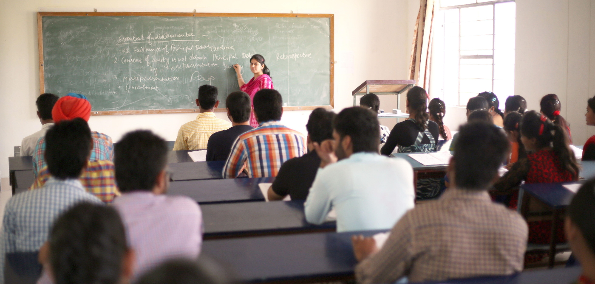

Skymentor College of Technology Blog
 Teacher-student (T-S) learning is a transfer learning approach, where a teacher network is used to “teach” a student network to make the same predictions as the teacher.
2
3
4
5
6